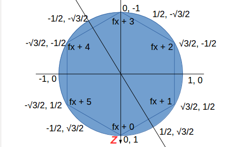

Geometry Handling¶
MapXZRoad¶
Expand PostGIS Way to polygon.
Obj3Type:
xv.XComponent.Obj3Type.MapXZRoad
Handler API:
Test pages:
test/html/map3d/geopath-road.html
test/html/map3d/geopaths.html
test/html/map3d/cd-express.html
See also Case: Volumetric Tube
hexatile¶
Generate hexagonal prism at a location in xz plane.
Obj3Type:
xv.XComponent.Obj3Type.Hexatile
test page:
test/html/map3d/haxcylinder.html
test/html/map3d/epsg4326-points.html
Where the hexagon tile are generated with the template:
{kind=link}
Hexatile is generated as a hexagonal cylinder. Parameters example:
paras: {
origin: o3,
geostyle: {
radius: 45, height: 24,
scale: 0.02,
maxHeight: 40,
groups: 2,
onGroup: (fx, feature) => { return fx % 2; }
}
}
- paras.origin
Specifying the geographically center of xworld
- paras.geostyle
Specifying how the cylinder been generated, where
– geostyle.radius: circumvent circle radius.
– geostyle.scale: geojson’s coordinates scale to xworld.
– geostyle.height: cylinder height, in xworld.
– geostyle.maxHeight: max heigth that with the highest thermal color.
The thermal colors can word only with tiledOrbs shader. If a cylinder tile’s heigth is higher than maxHeight, the higher part will be applied with the max color.
– geostyle.groups: total groups. Groups can be used by XTweener for showing different animation.
– geostyle.onGroup: optional callback for getting group index according to feature.
TexPrism & Triangulation¶
Extrude polygon to prism.
Obj3Type:
xv.XComponent.Obj3Type.texPrism
Handler API:
Test pages:
test/html/map3d/geopath-road.html
test/html/map3d/geopaths.html
test/html/map3d/cd-express.html
The texPrism geometry in x-visual can handling polygons of day-to-day used data from OSM etc. It first generate lateral face, then use off-the-shelf npm package, npm cutear [5] to generate end face of a prism.
Broadly, there are two way’s to handle this task:
- Polygon scanning like earcut or [1] or [2].
- Delaunary triangulation like [4].
The boundary is blur considering how [1] finishing the task.
References:
1. Liu Yonghe, Feng Jinming, Shao Yuehong, A Simple Sweep-line Delaunay Triangulation Algorithm,
3. Discussion: Divide a 2D polygon with N vertices into triangles draw in a 3D space, Mathatics, StackExchange.
4. Jonathan Richard Shewchuk, Triangle Open Source Project, Computer Science Division, University of California at Berkeley, Berkeley, California 94720-1776